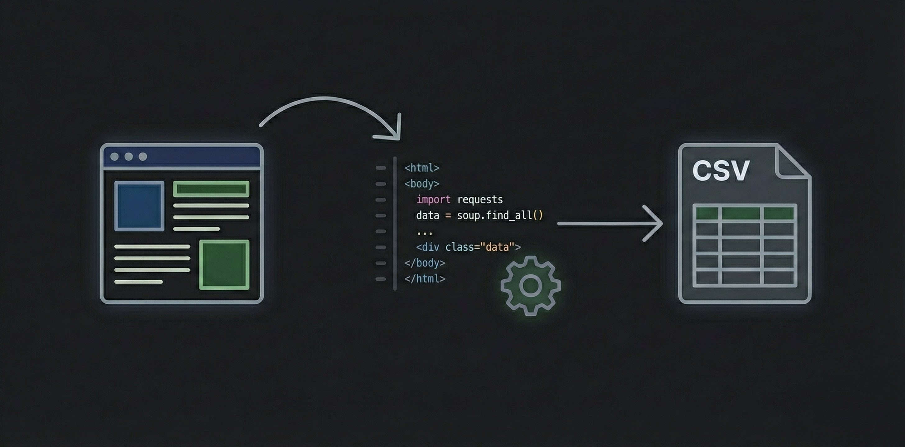

Collecte Automatisée de Données Web — Scraping Blue Buffalo

🔍 AgrandirCadre du projet & Objectifs
Développement d'un pipeline de scraping complet sur le site Blue Buffalo (alimentation animale) avec Python et Playwright. Extraire, structurer et exporter automatiquement les données produits.
Étapes de réalisation
Analyse de la structure du site
Étude des pages, rendu JavaScript dynamique et sélecteurs CSS/XPath pour adapter la stratégie d'extraction.
Développement du scraper
Playwright pour naviguer et extraire les données dynamiques. Structuration en DataFrame Pandas.
Export & automatisation
Export CSV automatique pour intégration dans Excel ou Power BI. Pipeline découpé en modules indépendants testables.
Ce que j'en retire
L'automatisation comme investissement
Un scraper prend plus de temps à construire qu'une extraction manuelle ponctuelle. Mais une fois en place, il peut être relancé en un clic — c'est la différence entre une tâche récurrente et un processus industrialisé.
💡 Ce que j'ai retenu
Un bon pipeline est modulaire : extraction, transformation, export séparés. Cette structure le rend testable, maintenable et réutilisable.
Positionnement par rapport aux ACs
| Apprentissage Critique | Statut | Commentaires |
|---|---|---|
| AC24.01VCOD Comprendre le rôle fondamental de l'analyse des besoins et de l'existant dans un projet décisionnel |
A | Analyse complète de la structure hétérogène du site pour adapter la méthode et les sélecteurs avant de coder. |
| AC24.02VCOD Percevoir les enjeux de l'automatisation et de l'interopérabilité d'un ensemble de tâches |
A | Pipeline entièrement automatisé avec export CSV garantissant l'intégration dans Excel ou Power BI. |
| AC24.03VCOD Prendre conscience des différences entre outils (logiciels, langages) pour choisir le plus adapté |
A | Choix de Google Colab + Playwright comme environnement optimal pour le scraping de contenu dynamique. |
| AC24.04VCOD Comprendre le cycle de vie d'un projet informatique |
P | Pipeline structuré en modules distincts, documentation des étapes — la phase de tests reste à approfondir. |